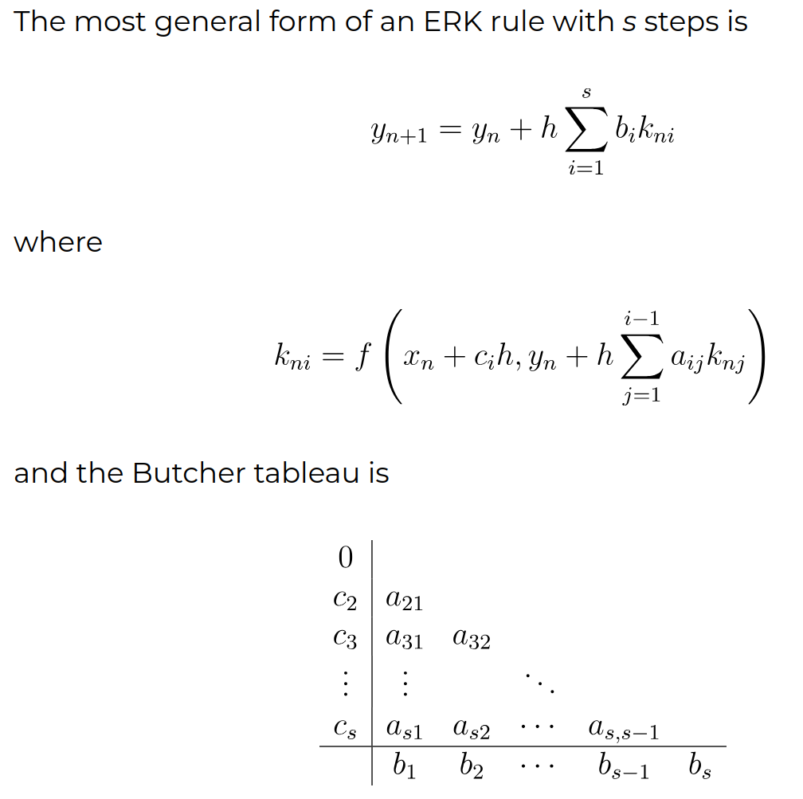
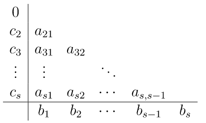

Time discretization#
- class struphy.ode.solvers.ODEsolverFEEC(vector_field: dict, butcher: ButcherTableau = ButcherTableau(algo='rk4'))[source]#
Bases:
objectSolver for FEEC coefficients based on explicit s-stage Runge-Kutta methods.

- Parameters:
vector_field (dict) – The vector field of the ODE as a dictionary. Keys are the variables to be updated (i.e. Stencil- or BlockVectors), values are callables representing the respective component of the vector field. That means dy_i/dt = f_i(y_1, …, y_n) for i = 1,…,n, where n is the number of variables.
algo (str) – See
ButcherTableaufor available algorithms.
- property vector_field#
The vector field of the ode as a dictionary. Keys are the variables to be updated (i.e. Stencil- or BlockVectors), values are callables representing the respective component of the vector field.
- property y#
List of variables to be updated.
- property yn#
List of allocated space for initial conditions for each variable.
- property butcher#
See
ButcherTableau.
- property k#
Dictionary of k values for each stage; keys are the variables and values are lists with one allocated k-vector for each stage.
{kind=link}
- class struphy.ode.utils.ButcherTableau(algo: Literal['rk4', 'forward_euler', 'heun2', 'rk2', 'heun3', '3/8 rule'] = 'rk4')[source]#
Bases:
objectButcher tableau for explicit s-stage Runge–Kutta methods.
Encodes the coefficients of an explicit Run–Kutta method in the standard Butcher tableau form:
c | a --+----- | b
The tableau image is also included in the project documentation:

- Parameters:
algo (LiteralOptions.OptsButcher, optional) – Identifier of the RK method to use. Supported identifiers are defined by
struphy.io.options.LiteralOptions.OptsButcher. Defaults to"rk4".- Variables:
a (cunumpy.ndarray, shape (s, s)) – Strictly lower-triangular matrix of stage coefficients (
a_ij).b (cunumpy.ndarray, shape (s,)) – Weights used to combine stage derivatives into the final update.
c (cunumpy.ndarray, shape (s,)) – Stage nodes (time fractions) corresponding to each row of
a.n_stages (int) – Number of stages
sof the Run–Kutta method.conv_rate (int) – Formal order of convergence of the method.
Notes
Arrays are stored using the project’s array module
cunumpy(imported asxp) so they behave like numpy arrays but can be swapped for other array backends if configured.Only explicit (strictly lower-triangular
a) Run–Kutta methods are supported. Passing an unsupportedalgoraisesNotImplementedError.
Examples
>>> bt = ButcherTableau("rk4") >>> bt.n_stages 4 >>> bt.b array([1/6, 1/3, 1/3, 1/6])
- algo: Literal['rk4', 'forward_euler', 'heun2', 'rk2', 'heun3', '3/8 rule'] = 'rk4'#
- __available_methods__ = ('rk4', 'forward_euler', 'heun2', 'rk2', 'heun3', '3/8 rule')#
- property a#
Characteristic coefficients of the method (see tableau in class docstring).
- property a_stage#
Characteristic coefficients of the method in old 1d format.
- property b#
Characteristic coefficients of the method (see tableau in class docstring).
- property c#
Characteristic coefficients of the method (see tableau in class docstring).
- property n_stages#
Number of stages of the s-stage Runge-Kutta method.
- property conv_rate#
Convergence rate of the s-stage Runge-Kutta method.
{kind=link}